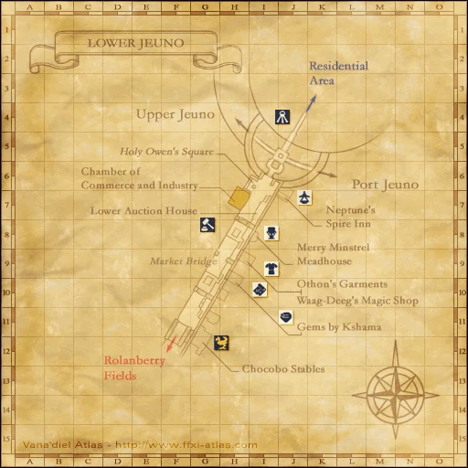
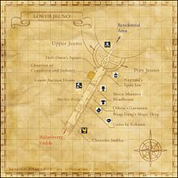

Description
Lower Jeuno is a city area in Jeuno.
Map

Involved in Quests / Missions
NPCs
- Adelflete
- Akamafula
- Aldo
- Alrauverat
- Amalasanda
- Amhu Sabaroleka
- Audee
- Biora
- Bki Tbujhja
- Bluffnix
- Bogharg
- Boisterous Jackal
- Caruvinda
- Chatnachoq
- Chenokih
- Chetak
- Chimh Dlesbah
- Chocobo
- Chululu
- Crazy Wolf
- Creepstix
- Danzhor
- Darcia
- Derrick
- Domenic
- Duplidoc
- Faursel
- Fephita
- Garnev
- Geuhbe
- Ghebi Damomohe
- Goldagrik
- Greyson
- Gurdern
- Guttrix
- Harnek
- Hasim
- Honorine
- Jazmin
- Joseph
- Kikilolo
- Kuah Dakonsa
- Kurou-Morou
- Liki Steligho
- Mataligeat
- Matoaka
- Maze Mongers Shopfront
- Mendi
- Mertaire
- Mesukiki
- Miladi-Nildi
- Momiji
- Morefie
- Muckvix
- Nakho Jawantal
- Nantoto
- Naruru
- Navisse
- Odasel
- Omer
- Panta-Putta
- Parike-Poranke
- Pawkrix
- Porter Moogle
- Promurouve
- Raji
- Rakuru-Rakoru
- Rhimonne
- Ruslan
- Saprut
- Sattal-Mansal
- Seyaya
- Shashan-Mishan
- Shomera
- Sniggnix
- Stinknix
- Subash
- Susu
- Sutarara
- Sweepstox
- Tawfeeq
- Taza
- Teigero-Bangero
- Tovrutaux
- Tuh Almobankha
- Venika
- Vingijard
- Voidwatch Purveyor
- Vola
- Yamilla
- Yatniel
- Yin Pocanakhu
- Yoskolo
- Zalsuhm
- Zauko
Story walkthroughs in this area
| Story | Mission / quest |
|---|---|
| RoZ 17 | Awakening |
| RoZ Q3 | Apocalypse Nigh |
| CoP 3-2 | A Vessel Without a Captain |
| CoP 3-4 | Tending Aged Wounds |
| CoP 3-5 | Darkness Named |
| ToAU membership | Tenshodo Membership |
| ToAU access | The Road to Aht Urhgan |
| ToAU 1 | Land of Sacred Serpents |
| WotG B-07 | Quelling the Storm |
| ACP 1 | A Crystalline Prophecy |
| ACP 11 | Ode of Life Bestowing |
| ACP 12 | A Crystalline Prophecy (Fin.) |
| AMK 14 | Smash! A Malevolent Menace |
| AMK 15 | A Moogle Kupo d'Etat (Fin.) |
| ASA 7 | Sugar-coated Subterfuge |
| ASA 10 | Battaru Royale |
| ASA 11 | Romancing the Clone |
| ASA 14 | An Uneasy Peace |
| ASA 15 | A Shantotto Ascension (Fin.) |
References
External references describe their own server or retail rules. Documented Zenith changes take precedence.
Map credits: Map 1 — HorizonXI Wiki. Original game maps © SQUARE ENIX; redrawn maps retain the credited authorship and license.

Supplemental NPC names and exits are from the base-world snapshot; expansion conditions can affect availability.
Additional level-75 reference


|
The lower level of Jeuno, otherwise known as Market Bridge, is filled with a wide variety of shops selling everything an aspiring adventurer could need. While somewhat hidden in the depths of the district, even the Goblins and Tenshodo have set up shops here. If the shops don't sell what you are looking for, the Lower Auction House will often have your desired item listed. Reflecting the fact that the lower level of Jeuno is considered by many to be the center of Vana'diel commerce, the Chamber of Commerce and Industry is located here. Chocobos can also be rented here for access to Rolanberry Fields. Obtaining the Lower Jeuno mapConnecting Areas
|
Quests Started Here
Fishing
| All Watersides | Cap |
|---|---|
| 5 | |
| 10 | |
| 17 | |
| 27 | |
| Nosteau Herring |
39 |
| 96 | |
| 0 | |
| 0 | |
| 0 | |
| 0 |

NPCs Found Here
|
|
Adapted from Eden Wiki: Lower Jeuno · Contributors and history · CC BY-SA 4.0. Revision 45573. Layout, links and optional background text adapted for Zenith.